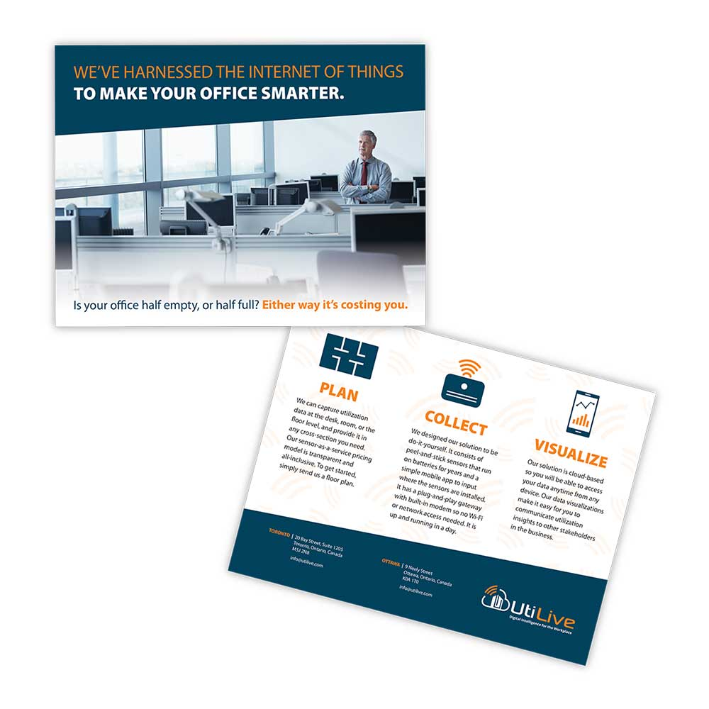

<div class="grid">
    <div class="info unit unit-xs-1 unit-s-1 unit-m-1 unit-l-1">
      <h2>utilive postcard design, 2016</h2>
      <p>Bearability was designed and drawn for the local Timothy’s World Coffee. It stands about 90cm tall by 60cm wide, and was made with pastel and Crayola chalk.
        For the past few years I have printed holiday cards featuring chalkboards I have made to raise money for the Alzheimer’s Society of Ottawa Renfrew County.</p>
    </div>
        
  </div>
